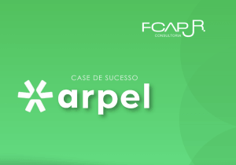
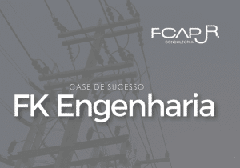
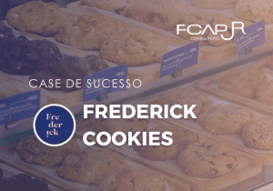
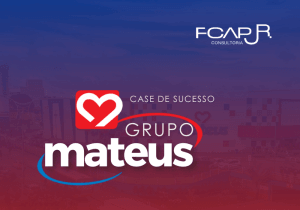
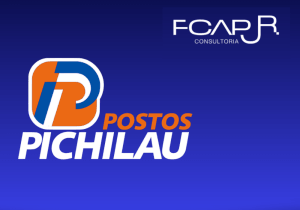
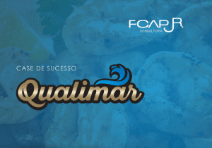

Histórias reais de transformação com a FCAP JR.
Veja como empresas de diversos setores evoluíram com soluções personalizadas em gestão, estratégia e eficiência.
Agendar diagnóstico gratuito
Arpel
Organizamos o setor logístico da Arpel com mapeamento de cargos e processos automatizados.
Ver case →Farmácia Tradição
Pesquisa qualitativa e quantitativa para entender o público das 10 filiais da rede.
Ver case →
FK Engenharia
Mapeamento de 300 processos e indicadores de gestão para maior organização operacional.
Ver case →
Frederick Cookies
Reestruturação de cargos, fluxos e metas estratégicas preparadas para expansão.
Ver case →
Grupo Mateus
Insights estratégicos para reposicionamento da unidade Iputinga baseados em dados locais.
Ver case →HOPE
Diagnóstico e padronização da cultura institucional por meio de pesquisa e escuta ativa.
Ver case →Murta Consultoria
Mapeamento de POPs e organização de fluxos garantindo clareza e escalabilidade.
Ver case →
Postos Pichilau
Sistema de fidelização gamificado com app próprio e redução de custos operacionais.
Ver case →
Qualimar
129 processos mapeados, rotinas padronizadas e continuidade garantida mesmo com mudanças na equipe.
Ver case →